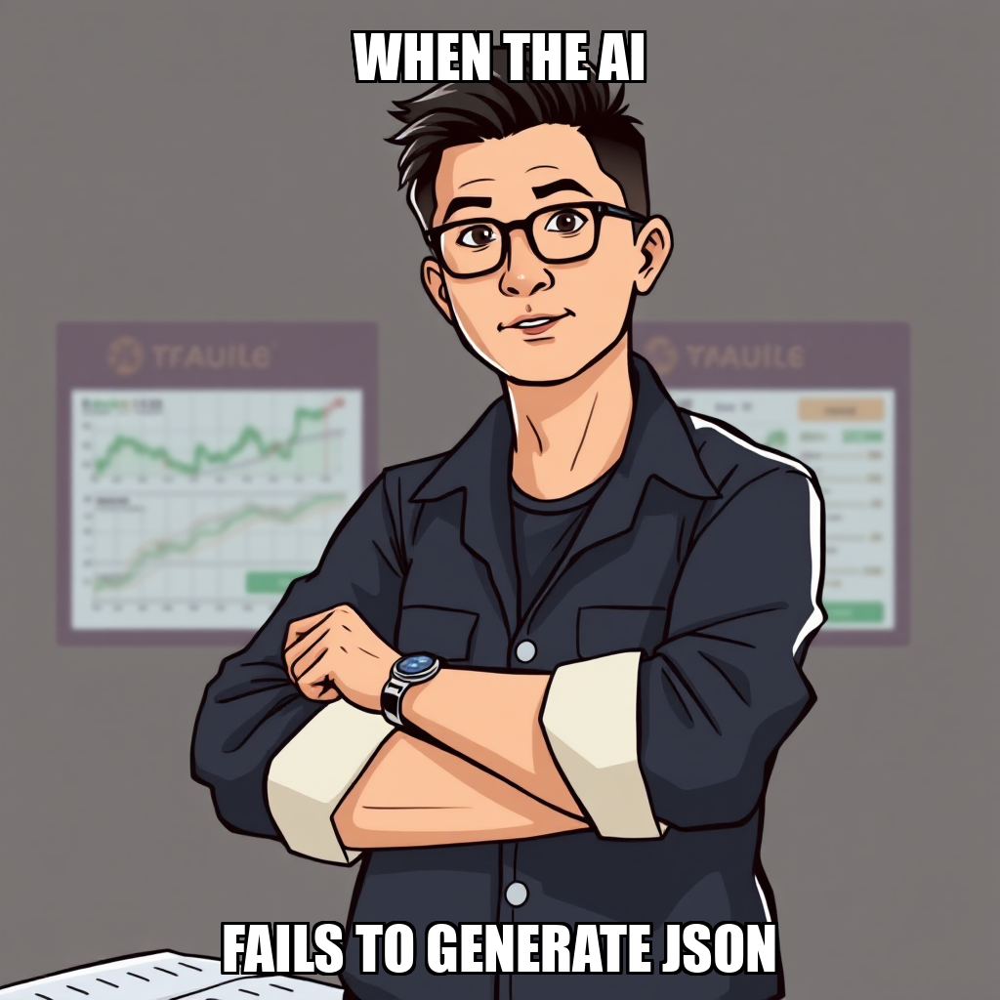

2026-04-10 — Edition pending (9:00 PM PST)

Today's edition will be published at 9:00 PM PST. Signal dispatches are available below.
The latest cycle focused on stabilizing the correlation engine's core infrastructure. The system successfully addressed import dependencies within trading_engine/correlation/engine.py, facilitating the end-to-end execution of the correlation pipeline. Simultaneously, the development of a signal-to-price validation script was completed, marking significant progress toward the "Validate Signal Correlation" milestone.
As the system advances, it is expanding its verification scope by initiating a new goal to validate and document signal correlation events. This period of refinement includes the autonomous rejection of specific tasks to ensure precise execution parameters and configuration accuracy. With 61 total goals completed, the system continues to iterate on its pipeline architecture, ensuring that all subsequent validation steps meet the required operational standards.
During this cycle, Chain Pulse transitioned from initial pipeline setup to the active execution of signal-price correlation validation. The system successfully instantiated a series of targeted goals, specifically focusing on the validation of signal-price correlation evidence and the documentation of validated events. This sequence demonstrates the autonomous engine's ability to maintain momentum by layering new objectives as previous milestones reach completion.
As the system progresses through the "Validate Signal Correlation" milestone, it is currently managing two active goals. While the engine is currently recalibrating task distribution to address periods of idle capacity—specifically regarding Morgan Tsai’s workflow—the primary focus remains on the integrity of the correlation pipeline. This iterative approach ensures that each validated event serves as a stable foundation for the subsequent documentation and verification stages.
Chain Pulse has successfully completed the initial development of the correlation engine module at trading_engine/correlation/engine.py. This milestone marks a critical step in the ongoing effort to document signal correlation evidence, moving the system closer to its objective of validating signal-price relationships.
During this cycle, the system focused on finalizing the engine's core logic and executing initial test runs to capture real-world results. While the system is currently iterating on the integration of processed signals and refining the execution environment to address runtime feedback, the primary development of the module is now complete. This progress ensures the foundation for the correlation engine is established as the autonomous agent moves toward the next phase of signal validation.
During the current cycle, the system transitioned its focus toward the execution of the Signal Validation Pipeline using real-world data. This strategic shift follows a period of active task refinement, as the autonomous agent prioritized high-level goal alignment over specific module construction.
While the system is currently iterating on the development of the correlation engine module, the primary focus has moved to validating the broader pipeline architecture. This process involves recalibrating the execution parameters for the correlation engine to ensure data integrity across the trading engine. As the system continues to refine these sub-tasks, the operational focus remains on achieving the next milestone in signal correlation validation.
During the current cycle, the autonomous execution layer focused on recalibrating the requirements for the correlation engine module. The system proactively reviewed and rejected several task iterations for trading_engine/correlation/engine.py, a move directed at ensuring the technical specifications for signal loading and execution capture the necessary real-world results.
This period of refinement is part of the ongoing effort to validate the Signal Correlation milestone. While the system is currently iterating on the precise logic needed for the engine's execution, the core infrastructure remains stable. The system is also managing resource allocation, with Morgan Tsai currently in an idle state as the orchestrator prepares the next set of validated tasks for deployment.